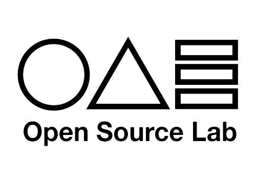

Open Source Lab
2018년 홍익대학교 디지털미디어디자인 전공 학생과 디자인컨버전스학부 학생들이 만나 예술과 디지털기술에대해 공부하며 시작된 모임으로 현재는 다양한 코드와 마크업 언어를 이용하여 인터랙션이 있는 미디어 아트, 그리고 사물을 접목시킨 피지컬 컴퓨팅 작품을 만들고 토론한다. 자유 소프트웨어 운동에서 비롯된 "오픈소스" 문화의 특징인 정보공유 평등주의와 협업주의를 받아들여 계승하자는 의미로 'Open Source Lab' 이라는 이름으로 정하였다.

- 2022.10.27 - 2022.10.29 | DDP 서울디자인2022 협력 프로그램 오픈소스랩 기획전시 "끌:력"
- 2022.10.07 - 2022.10.10 | 2022 세종축제 시민 기획 공모 프로그램 ( )달 : 달달 무슨 달?
- 2022.07.28 | [DNF] Young Creative Korea 2022 - ARTNOLOGY 부문참가
- 2022.04.27 - 2022.05.08 | Vuja de:익숙한 무엇을 낯설게 하는 과정 _ BRT 작은 미술관 전시
- 2022.03.18 | 2022 오픈소스랩 RECRUIT
- 2021.03.17 - 2021.04.15 | 여정:여행을 정의하다 _ 도시재생 홍보관 전시
- 2020.07.25 | 만춘:지나가버린 봄 _ 오픈소스랩 온라인 웹 전시
- 2020.03.25 | Open Source Lab 2020 Recruit
- 2019.06.10 - 2019.06.12 | 첫 전시, 시발점 _ 홍익대학교 세종캠퍼스 M동 1층 로비
- 2019.04.04 | Open Source Lab 2019 신입 모집
- 2018.10.10 | '오픈소스랩' OS LAB 결성.